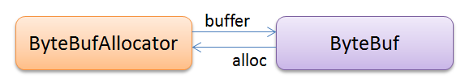

前言
Java NIO里有一个Buffer，Netty再次基础上定义了一个ByteBuf，提供了更多的特性，更方便的API。
io.netty.buffer包的类图如下：
ByteBuf
ByteBuf是一种支持随机和连续访问的byte数组。相比于普通的byte[]或 NIO Buffer它定义更为方便的API。比如说它同时支持读写，而不需要像的ByteBuffer那些必须调用flip()来进行读写状态切换。
ByteBuf的结构：
ByteBuf通过两个重要的指针参数（或者叫数组索引），将byte[]分成了三部分。
-
readerIndex -
writerIndex
可读字节部分(readable bytes)
可读字节部分就是真实数据存储的地方。
任何以read或skip开头的方法都会影响readerIndex，操作后readerIndex都会增加相应的字节数。如果请求的参数也是ByteBuf而且没有指定索引(index)，那被操作的buffer的writerIndex也会增加。
示例代码：
// Iterates the readable bytes of a buffer.
ByteBuf buffer = ...;
while (buffer.readable()) {
System.out.println(buffer.readByte());
}
可写字节部分(writable bytes)
可写字节部分是定义用来添加数据的地方。
任何以write开头的方法都会影响writerIndex，操作后writerIndex都会增加相应的字节数。如果参数也是ByteBuf而且没有指定索引(index)，那么被操作的buffer的readerIndex也会增加。
示例代码：
// Fills the writable bytes of a buffer with random integers.
ByteBuf buffer = ...;
while (buffer.maxWritableBytes() >= 4) {
buffer.writeInt(random.nextInt());
}
丢弃字节部分(discardable bytes)
丢弃部分是那些执行了读操作的地方。
初始的时候，丢弃部分是0，随着读操作的进行这部分大小会增长到writerIndex。
已读字节部分可以被丢弃通过discardReadBytes()，它的效果如下：
执行discardReadBytes()之前：

执行discardReadBytes()之后：
清除缓冲区的索引
通过clear()方法，你可以将readerIndex和writerIndex都清零。
注意：它只清除索引，不清楚buffer的内容。这个跟NIO的Buffer.clear()不同。
执行clear()之前：
执行clear()之后：
ByteBufAllocator
在Netty中，我们使用ByteBuf时通常都是由ByteBufAllocator创建。
它俩的关系如下：

ByteBufAlloactor的buffer()方法创建ByteBuf对象，ByteBuf的alloc()方法返回创建它的ByteBufAllocator对象。
ByteBuf的实现类
从上面的类图我们可以发现，ByteBuf的实现类主要是Pooled、Unpooled和Heap、Direct的组合。
HeapByteBuf和DirectByteBud
Heap和Direct的最大区别，在于它的实现方式，我们以UnpooleDirectByteBuf和UnpooledHeapByteBuf的源码为例：
public class UnpooledHeapByteBuf extends AbstractReferenceCountedByteBuf {
private final ByteBufAllocator alloc;
// 可以看到就是个byte数组
private byte[] array;
private ByteBuffer tmpNioBuf;
}
public class UnpooledDirectByteBuf extends AbstractReferenceCountedByteBuf {
private final ByteBufAllocator alloc;
//可以看到它内部用的是ByteBuffer,
//看它的分配代码就会发现是java.nio.DirectByteBuffoer
private ByteBuffer buffer;
private ByteBuffer tmpNioBuf;
}
现在应该清楚了，HeapByteBuf就是由JVM的heap管理；而DirectByteBuf就是使用的堆外内存。
关于Direct I/O（直接I/O）的解释可以看这里
PooledByteBuf和UnpooledByteBuf
Pooled是Netty 4.X的新特性，它实现了一个高性能的buffer池，有以下优势：
- 频繁分配、释放buffer时减少GC压力
- 在初始化新buffer时减少内存消耗
- 及时释放direct buffer
当然了，这些也不是Netty自卖自夸，有twttier的文章为证：Netty 4 at Twitter: Reduced GC Overhead
zero-copy（零拷贝）
提起Netty怎么能不提它的零拷贝技术。
Netty的零拷贝体现在这几方面：
- 提供了使用direct I/O的ByteBuffer（也就是directByteBuf），对于处理接收、发送ByteBuf采用directByteBuf可以避免数据在JVM的堆内存和直接内存的相互拷贝，提高了效率。
- 允许我们将多个ByteBuf合并成一整个ByteBuf供用户使用，而不需要对数据进行拷贝操作。
CompositeByteBuf
API是这样描述它的：将多个ByteBuf虚拟成一个ByteBuf，建议使用ByteBufAllocator.compositeBuffer()或Unpooled.wrappedBuffer(ByteBuf ...)来创建。
我们知道TCP报文有个特点，就是在传输的时候，会把应用层的数据拆开成字节，然后按自己的传输需要，选择合适的字节大小进行传输。
比如： 我们发送数据是这样的：
*------*------*------* ! ABC ! DEF ! GHI ! *------*------*------*
接受时可能就变成这样了：
*----*-------*---*---* ! AB ! CDEFG ! H ! I ! *----*-------*---*---*
例如我们处理Http请求的时候，就会遇到这种情况：
ByteBuf requestPart1 = byteBuf1.slice();
ByteBuf requestPart2 = byteBuf2.slice();
ByteBuf request Unpooled.wrappedBuffer(requestPart1,requestPart2);
一条信息可能会被分割成多个数据包传输（对应Netty的多个ByteBuf），而单个数据包对我们是无意义的，必须合并成我们想要的完整信息才能进行后续处理，而Netty通过零拷贝的方式，使得我们合并数据包的过程没有进行JVM堆内存和直接内存的数据拷贝，而只是通过保存多个ByteBuf的多个引用，将它们虚拟成一个ByteBuf（也就是CompositeByteBuf）。
日期：2014-07-23、2014-07-24
参考资料：Netty 4.x学习笔记 – ByteBuf、Netty 4.0 API、Netty系列之Netty高性能之道